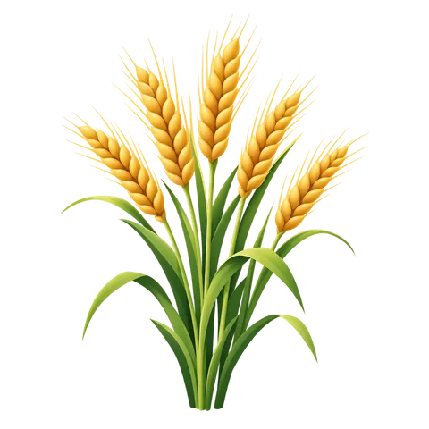

How radar listens
- It brings its own signalSentinel-1 sends microwave pulses and listens for the echo, so darkness does not matter and cloud mostly does not block it.
- Crops echo differentlyLeaves, stems and soil send back different amounts, in two channels called VV and VH.
- It comes back every 12 daysOver this area there is one pass every 12 days. Stacked together they draw a winter-long signature for each field.

WheatMustard
Sugarcane